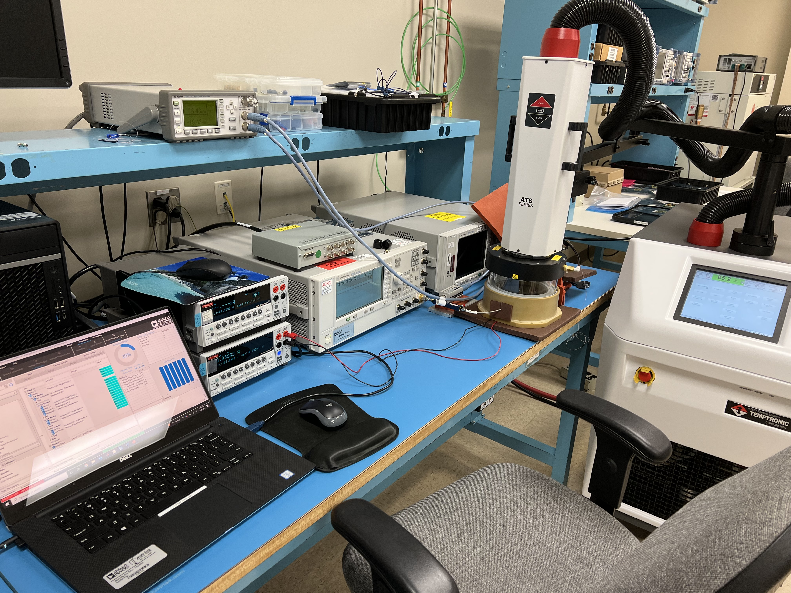
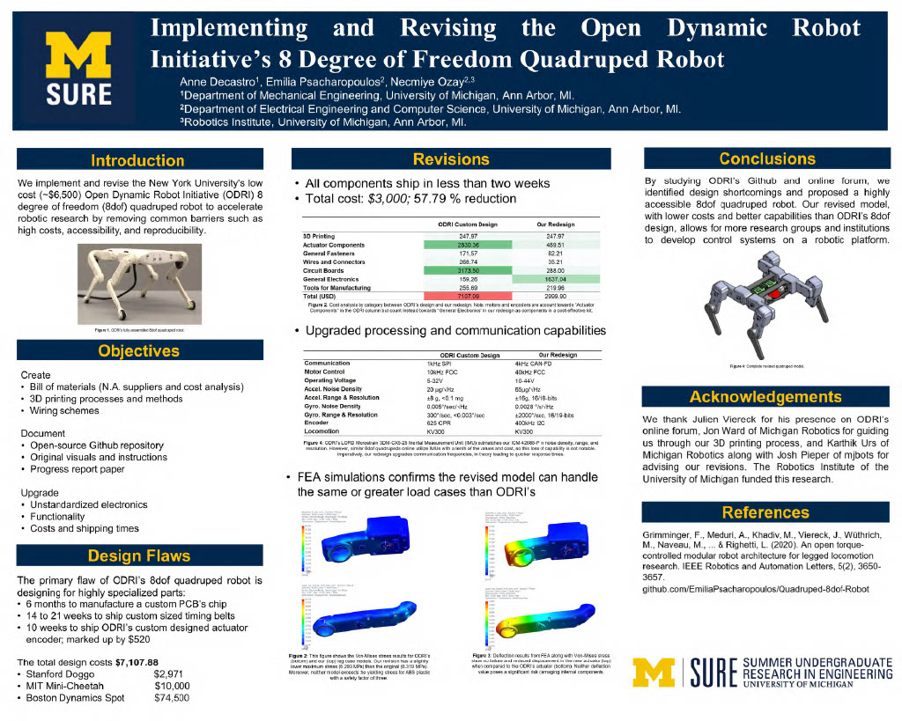

Aurora Flight Sciences
Autonomy Engineer • April 2024 - Present
Business Insights Generation (>1 year, Current)
Program Description: This is an Aurora-led program that aims to provide business insights to inform Boeing’s technology selection for its next-generation sustainable aircraft. The program is delivering:
- an interactive data analysis and visualization dashboard (frontend), and
- a CP-SAT modeling framework to predict optimal aircraft technology selections (backend).
Initial Foundation Work: I began my work on this program by producing its first comprehensive 30-page documentation suite detailing the math and architecture of the CP-SAT optimizer framework, then refactored the entire codebase to improve code clarity and usability. Building on this foundation, I developed within the program's existing Python-based stack (using Dash for frontend and Python backend) to create visualization charting and mapping tools that processed 2GB of data stored in .zip, .csv, and .parquet files.
Strategic Architecture Transformation: Recognizing that the original design would not scale for internal deployment, I made the strategic decision to completely transform the application's technology stack. I migrated all data to a custom-designed ORM-PostgreSQL database, creating the table structures and schema myself, then prototyped a React TypeScript frontend connected to a Python FastAPI backend. This V2 application replicated most V1 functionality including data selection via AG-Grid, mapping of routes/airports/infrastructure, and interactive charts (histograms, scatterplots, etc.), though the decision-making modeling interface remains in development. While I attempted internal deployment to VMware Tanzu and Azure, funding constraints and administrative resistance limited progress, though I gained valuable experience in designing applications for scalable deployment.
Technical Leadership and Model Enhancement: As the lead full-stack developer with control over merge request reviews, I ensure code quality while directing the application's development. I collaborated with a teammate to extend the decision-making framework by creating a time-dependent model for a specific energy carrier that remembers past decisions in future years, allowing solutions to persist across time periods. I then leveraged this enhanced model to create and present case studies to 25 engineers (many at senior level) at a Boeing sustainability workshop in Seattle, demonstrating how the model's enhanced decision-making capabilities enable extraction of valuable insights for predicting key investments. Additionally, I created a separate presentation analyzing the economics of an existing Boeing aircraft, explaining its market value and current operational patterns across global markets.
Backend Modeling (3 months)
I worked as a backend modeling developer on Boeing's Cascade Climate Impact Model, focusing on enhancing code quality, maintainability, and performance for the backend library distributed to hundreds of users. My most significant contribution was winning first place in a team hackathon by dramatically optimizing the Non-CO2 module's runtime from nearly 18 minutes to 4.3 seconds—a 99.6% performance improvement achieved through efficient algorithm design and code refactoring. This critical optimization unblocked the module for customer deployment.
Software Services (1 month)
I designed and prototyped a service to monitor inter-agent communication for Aurora's internal autonomy framework. The solution implemented a distributed network of C++ DDS subscribers that consume and log messages at 1 Hz into a SQL database while exposing a REST API for the Python frontend, enhancing backend performance and data handling capabilities.
Associate Autonomy Engineer • August 2023 - April 2024
DoD Autonomy Architecture
I earned a promotion within a year at Aurora after leading key contributions to a high-visibility Department of Defense autonomy architecture program. I collaborated with a cross-functional 8-person team to design Level 1 compliance requirements and develop a scalable Command and Control authority model for autonomous distributed systems. To improve program documentation accessibility, I taught myself HTML and CSS to create a static site hosting our complete decision-justification documentation, then created Jira tickets and delegated tasking to 4 team members for about a month. Following the program, I prototyped a low-latency C++ library framework to validate the authority model, identifying scalability constraints to inform future development.
Analog Devices, Inc.
Product/ Test Engineering Intern • Summer 2022
As part of ADI's Aerospace and Defense team, I automated the Radio Frequency (RF) characterization measurement process for the company's new chips. Analog Devices, Inc. (ADI) provides industry-leading integrated circuits (ICs) to top satellite communications companies, including Starlink and Blue Origin. This role not only immersed me in RF test engineering but also exposed me to the cutting-edge technologies driving the 5G revolution.
My primary responsibility was to standardize RF characterization data collection on a single, robust platform: Zero Code GUI (ZCG) by Soliton Technologies. After completing LabVIEW Core 1 and 2 training, I developed graphical user interfaces (GUIs) using National Instruments LabVIEW scripts to automate RF characterization data collection across various ADI technologies. For instance, I created a GUI to measure 2nd and 3rd order two-tone intermodulations using two signal generators. Additionally, I authored a ZCG tutorial guide to encourage other ADI RF testing teams to adopt the platform and suggested weekly user interface (UI) improvements to the ZCG development team. My work demonstrated the efficiency gained through automation and will facilitate the characterization of even more ADI technologies.
Beyond my primary assignment, I developed MATLAB programs to enhance ADI’s data processing capabilities for test results analysis. One program generated radiation performance reports by parsing large datasets to produce tables of key statistics. Another parser sifted through thousands of raw data files, compiling essential spreadsheets and hundreds of plots for the design team. These automation efforts have significantly reduced the senior engineering team's workload and cumulatively saved them days or even months of effort. My comprehensive MATLAB documentation will support the team in tackling similar data parsing projects in the future.
University of Michigan Robotics Institute
Robotics Research Engineering Intern • Summer 2021
I collaborated with an interdisciplinary team of graduates and undergraduates on the Open Dynamic Robot Initiative (ODRI), which aims to develop a low-cost, open-source quadruped robot as a platform for researchers worldwide to create innovative control systems. Traditionally, robotics has had a high barrier to entry due to educational and financial constraints. Our advanced 3D-printed robots, equipped with numerous degrees of freedom, enhanced sensing capabilities, and robust online support, offer significant opportunities to expand the field globally.
Our primary research objective was to implement and refine ODRI’s quadruped robot. I enhanced the technical documentation by conducting a statistical cost analysis, creating detailed wiring schematics, assembling circuit tutorials, and compiling an original bill of materials on GitHub to track our research progress for other collaborators. Additionally, I led the redesign of the robot’s electrical components, circuitry, computing, communication, and motor control systems. By replacing ODRI’s highly specialized PCBs with generic control platforms, we quadrupled the communication capabilities and motor control bandwidth while reducing costs by over 91%. We documented our mechanical and electrical redesigns in a research paper and presented our findings at Michigan’s Summer Undergraduate Research in Engineering (SURE) symposium.
NAVSEA
Engineering Technician Intern • Summer 2020
I compiled and synthesized hundreds of testing documents into executive summaries that conveyed key Lessons Learned to Navy leadership in the Unmanned Maritime Systems Program Office (PMS 406). Additionally, I collaborated with senior engineers to organize a multi-day leadership conference for Unmanned Undersea Vehicle (UUV) Homeport program managers. My communication and documentation skills were recognized as exceptional by the Strategic Capabilities Office (SCO).
The George Washington University
Engineering Intern • Summer 2018
I assisted mechanical engineering PhD students in researching hydrophobic aluminum treatment methods to prevent cracking in the hulls of container ships bound for arctic regions.